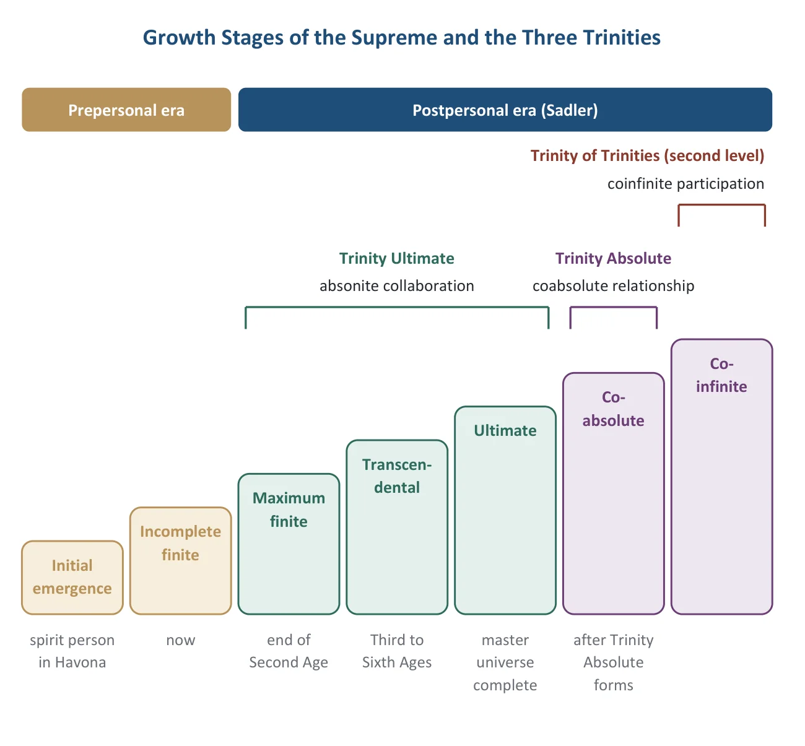

Original: Apéndice XIX, La segunda Trinidad experiencial (pp. 415–427)
Cuando el universo maestro esté completo y Dios el Último haya alcanzado la poder-personalización final, la segunda Trinidad experiencial, la Trinidad Absoluta, podrá formarse efectivamente. Sus miembros son Dios el Supremo, Dios el Último y el no revelado Consumador del Destino Universal. Para resolver el problema de que el Supremo esté presente en tres Trinidades a la vez, Sadler esboza el crecimiento del Supremo en siete etapas. Luego compara las tres Trinidades y razona que, como la meta de la Trinidad Absoluta es infinita, nunca llegará a unificarse plenamente, aunque puede alcanzar lo absoluto en calidad, si no en cantidad.
En los albores de la eternidad, la Trinidad del Paraíso proyectó dos niveles subabsolutos de existencia. Sadler entiende que son los niveles finito y absonito.
Las Trinidades post-Havona son experienciales —son inherentes en la creación de dos niveles subabsolutos y evolucionales de manifestación poder-personalidad en el universo maestro.0:12.1
Puesto que la Deidad busca la unificación en todo nivel supermaterial, y la función de la Trinidad siempre abarca la realidad de la Deidad, dos niveles deben dar origen a dos Trinidades experienciales. La primera, la Trinidad Última, consta del Ser Supremo, las Personalidades Creadoras Supremas y los Arquitectos del Universo Maestro; se formará efectivamente al final de la segunda edad, unificará el universo maestro y, como resultado, emergerá Dios el Último. Cuando el Último emerja finalmente al final de la sexta edad, podrá formarse la segunda Trinidad experiencial.
2. La Trinidad Absoluta — la segunda Trinidad experiencial— ahora en proceso de actualización, consistirá en Dios el Supremo, Dios el Último y el no revelado Consumador del Destino-Universo.0:12.7
Una Trinidad no es una unión de tres personas, sino de tres realidades de Deidad. El Supremo y el Último pertenecen a ella en cuanto Deidad, mientras que como personas existen aparte de la Trinidad. El Consumador del Destino Universal, de quien casi nada se sabe, añade una gran incertidumbre al futuro de esta Trinidad.
La Trinidad Absoluta plantea un problema nuevo. La Deidad del Supremo está presente en la Trinidad Última, en la Trinidad Absoluta y en el segundo nivel de la Trinidad de Trinidades, y el Último está presente en dos de ellas. Sadler opta por llamar a ese segundo nivel la «tercera Trinidad experiencial».
¿Tiene entonces el Supremo tres naturalezas de Deidad, o una sola naturaleza presente tres veces? Sadler sostiene que el Supremo es una sola Deidad cuya presencia funcionará en niveles absonitos, coabsolutos y coinfinitos. Si se puede contactar al Padre existencial en todos los niveles, desde lo finito hasta lo absoluto, argumenta, no hay razón para que Dios el Supremo no crezca hacia arriba a través de niveles experienciales comparables. El texto designa las tres relaciones con términos diferentes.
1. Colaboración Absonita en la primera Trinidad experiencial. 2. Relación coabsoluta en la segunda Trinidad experiencial. 3. Participación coinfinita en la Trinidad de Trinidades, pero no tenemos un concepto satisfactorio en cuanto a qué significa esto en realidad.117:7.9–11
Sadler interpreta la diferencia entre estos tres términos en el sentido de que el Supremo sigue creciendo en una era «postpersonal» aun después de su emergencia plena.
Así como dividió la emergencia del Último, Sadler divide ahora el crecimiento del Supremo, esta vez siguiéndolo más allá de la emergencia. Aplica al crecimiento de la Deidad la clasificación que encabeza el documento 106 (finito incompleto, finito máximo, trascendental, último, coabsoluto).
La primera etapa es la persona espiritual de Havona anterior a los superuniversos; la segunda es la etapa presente de síntesis de poder-personalidad, el estado del «finito incompleto». Juntas forman lo que el texto llama la era prepersonal. Cuando termine la segunda edad, el Supremo emergerá como el «finito máximo» y se formará la Trinidad Última. A medida que se abra el espacio exterior, toda la realidad finita se embarcará en una aventura hacia el nivel absonito [0:7.10]; también el Supremo experimentará un crecimiento «trascendental» y, con la terminación del universo maestro, alcanzará el estado «último». Para llegar a ser miembro de la Trinidad Absoluta, debe situarse más allá de lo último, en estado coabsoluto. Por último viene el estado coinfinito en la Trinidad de Trinidades, de cuyo significado el autor del documento 117 confiesa no tener un concepto satisfactorio.

Sadler sostiene que también el Último, después de emerger, pasará por un crecimiento postpersonal hasta una relación coabsoluta en la Trinidad Absoluta y luego hasta una participación coinfinita. Que una sola Deidad pueda estar presente en tres niveles a la vez pertenece, como el misterio de las tres Deidades del Paraíso que actúan cada una como persona y son a la vez la Trinidad indivisible, a un nivel que está más allá del tiempo y del espacio.
El documento 117:7.9 describe la relación en la primera Trinidad experiencial como «colaboración absonita». En la p. 421 Sadler la reformula como colaborar «absolutamente», lo que además contradice su propia cita anterior (p. 418), por lo que parece un desliz de transcripción. Este comentario sigue el texto. Además, la clasificación de 106:0.3–0.7 era originalmente una división de los niveles de realidad de las criaturas y de los universos; Sadler la toma prestada para las etapas de crecimiento de la Deidad, y esa aplicación es interpretación suya.
| Trinidad del Paraíso | Trinidad Última | Trinidad Absoluta | |
|---|---|---|---|
| Naturaleza | Existencial, infinita | Experiencial, subinfinita | Experiencial en su origen, se interpone en los Absolutos existenciales |
| Miembros | Padre, Hijo, Espíritu | Ser Supremo, Creadores Supremos, Arquitectos Maestros | Dios el Supremo, Dios el Último, Consumador del Destino Universal |
| Origen | Sin comienzo | Se forma al final de la segunda edad | Se forma al final de la sexta edad |
| Unificación | Perfecta y eterna | Alcanza la unificación plena | Unificación plena dudosa |
| Resultado | Fuente de las Deidades experienciales | Emerge el Último | Posiblemente Dios el Absoluto |
El libro de Urantia es claro en un punto.
aunque la existencial Trinidad del Paraíso es infinita, y aunque la experiencial Trinidad Última es subinfinita, la Trinidad Absoluta no es tan fácil de clasificar.106:6.5
La Trinidad Última recorre un circuito completo de crecimiento experiencial, desde el comienzo, pasando por la formación, hasta la unificación. La Trinidad del Paraíso, por ser eterna e infinita, no crece. La Trinidad Absoluta, aunque tiene verdaderamente un origen, puede verse frustrada en el camino hacia su destino.
Sadler toma el tema de esta sección de una sola frase.
En el Paraíso y en el universo central, la unidad de la Deidad es un hecho de existencia. A lo largo y a lo ancho de los universos del tiempo y del espacio en evolución, la unidad de la Deidad es un logro.56:5.4
Ambas Trinidades experienciales pasan por al menos tres etapas: «realidad cualificada» en su comienzo, «realidad fáctica» en su formación y «realidad unificada» en su destino. La Trinidad Última es en la actualidad una realidad cualificada. Solo el cuerpo de Arquitectos Maestros existe en su totalidad; al cuerpo de Creadores Supremos aún le faltan los Hijos y Espíritus de los universos todavía no comisionados. Al final de la segunda edad se forma como realidad fáctica, sigue «unificándose» mientras se completan los niveles del espacio exterior y, al final de la sexta edad, se convierte en una realidad unificada.
La Trinidad Absoluta sigue el mismo camino durante las dos primeras etapas. Puede que ya ahora sea una realidad cualificada, y se forma como realidad fáctica cuando se cierra la sexta edad. La tercera etapa, sin embargo, es donde el camino se bloquea. Su meta es absoluta, de modo que su alcance ilimitado hacia la unificación final choca con el hecho ineludible de la infinidad. Sadler llama a esto «La barrera de la infinidad» o, alternativamente, «el Impasse de los Absolutos».
El texto dice que la función de la Trinidad Absoluta sugiere un escenario mucho mayor que el universo maestro [106:6.2]. Si más allá del universo maestro se extiende un Cosmos Infinito ilimitado, entonces el funcionamiento pleno y la unificación de esta Trinidad significarían la actualización absoluta de todos los potenciales [106:6.3]. Eso equivaldría a agotar los tres Absolutos de potencialidad, la triunidad del potencial. Sin embargo, el texto declara:
Y es inconcebible que la infinidad cuantitativa pueda jamás tornarse completamente real en finalidad.106:7.1
Solo la Trinidad del Paraíso, que es infinita, puede superar la infinidad. Las dos Trinidades experienciales están compuestas de Deidades derivadas y no son infinitas [0:12.3]. Aun así, el texto dice también que la Trinidad Absoluta es «absoluta en función total», y aquí Sadler ve una primera salida.
Y parecería también que el no condicionado también sería sin límites, por lo menos desde un punto de vista cualitativo, aunque no estamos igualmente seguros en cuanto a las relaciones cuantitativas.106:6.4
La absolutez de calidad y la absolutez de cantidad pueden separarse. La Trinidad Absoluta puede ser limitada en su alcance y, sin embargo, funcionar absolutamente en valor. En consecuencia, Sadler concluye que esta Trinidad activará los tres Absolutos de una manera limitada pero cada vez más amplia, y que la experiencialización del Absoluto de Deidad continuará para siempre sin completarse nunca. La personalización de Dios el Absoluto mediante la unificación de la Trinidad se verá frustrada.
Hay, no obstante, una frase en el texto que abre el camino a una especulación sin fin.
el destino se consume probablemente por la acción del Consumador del Destino Universal, y este acto tiene probablemente que ver con el Supremo y el Último en la Trinidad Absoluta.106:7.3
Sadler sugiere que este ser no revelado aporta a la segunda Trinidad experiencial algo que ya existía, de modo muy parecido a lo que hacen los Arquitectos Maestros en la primera. Parte de la barrera de la infinidad podría superarse mediante el acto de este ser. Aun así, Sadler no espera que personalice a Dios el Absoluto mediante la unificación de la Trinidad.
¿Cómo pueden dos Deidades experienciales de estado post-último entrar en una relación coabsoluta? Sadler encuentra su respuesta en la enseñanza de que una Trinidad es más que la suma de sus miembros.
La potencialidad del grupo excede siempre en mucho la simple suma de los atributos de los componentes individuales.10:5.2
Este exceso sobre la suma, junto con la presencia del Consumador del Destino, hace coabsolutos a sus miembros post-últimos. Que la función de esta Trinidad se extienda hasta los mismos límites de lo no personal [0:12.7] se debe igualmente a que su función toca a los tres Absolutos. Sadler llama a esta Trinidad la «supersuma» del universo maestro, el tercer y último universo nuclear. Surge del universo maestro, pero su función apunta más allá de él, hacia el Cosmos Infinito ilimitado.